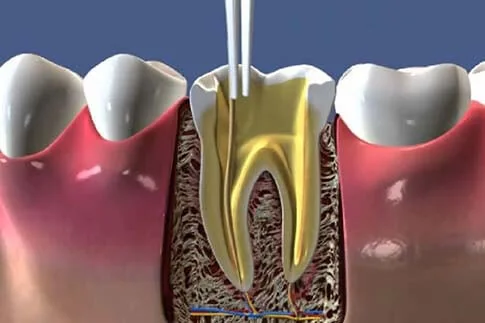

Endodonti, halk arasında kanal tedavisi olarak bilinen bir tedavi yöntemidir. Dişin enfekte olması ya da ciddi şekilde hasar görmesi durumunda uygulanan bu tedavi, dişi çekmeye gerek kalmadan kurtarmayı amaçlar. Dişin sağlığını yeniden kazanmasına yardımcı olan bu tedavi, genellikle basit bir şekilde uygulanabilir ve dişin kurtarılmasını sağlar.
Endodonti tedavisinin süresi, hastanın dişinin durumuna bağlı olarak değişir. Genellikle 1 ila 2 seans sürer, ancak dişin hasarı fazla olduğunda tedavi 3 seansa kadar uzayabilir.
Bu tedavi, uzman bir diş hekimi ya da endodontist tarafından yapılır. Endodontist, dişin iç yapısı ve sinirleriyle ilgilenen, bu alanda uzmanlaşmış diş hekimidir.
Tedaviye başlamadan önce, diş hekiminiz genellikle dişin röntgenini almanızı isteyecektir. Bu röntgen, dişin köklerinin durumu ve çene kemiğinde olası bir enfeksiyonun varlığını görmek için gereklidir.
Tedaviye başlamak için öncelikle bölge uyuşturulur. Bu, dişin etrafındaki sinirlerin uyuşturulması amacıyla yapılan lokal anestezi ile gerçekleştirilir. Dişin siniri enfekte olmuşsa, her zaman anestezi uygulanmayabilir, ancak hastanın rahatlıkla tedavi edilmesi için genellikle anestezi kullanılır.
Endodonti sırasında, dişinizin etrafı su geçirmeyen bir maddeyle kaplanarak korunur. Ardından, dişin pulpa katmanına ulaşmak için dişin üzerine ince bir delik açılır. Dişin iç kısmı, enfekte olan ve zarar gören dokulardan temizlenir.
Temizlik işlemi sırasında, dişin içindeki deliğin genişletilmesi gerekebilir. Bu, dişi tamamen temizlemek ve sonrasında tedavi malzemesini yerleştirmek için önemlidir. Deliğin genişletilmesi işlemi, dişi zarar vermeden yapabilmek için özel aletler kullanılarak yapılır. Bu süreç, lokal anestezi ile ağrı hissedilmeden gerçekleştirilir.

Endodonti (Kanal Tedavisi) Sonrası İşlemler
Kanal eğeleme işlemi tamamlandıktan sonra, dişin iç kısmındaki kirli maddeler su veya sodyum hipoklorit bileşeni ile temizlenir. Bu işlem, dişi temizlemeye yardımcı olur ve enfeksiyon riskini azaltır.
Endodonti tedavisinde, diş temizlendikten sonra yapılması gereken son işlem, dişin iç kısmındaki deliğin kapatılmasıdır. Ancak bu konuda diş hekimlerinin iki farklı görüşü bulunmaktadır. Bir grup, dişin temizlendiği gün hemen kapatılması gerektiğini savunurken, diğer grup ise temizleme işleminden en az bir hafta sonra kapatılmasını önerir. Bunun nedeni, dişte yeni bir enfeksiyon oluşma ihtimalidir; enfeksiyon gelişirse, müdahale etmek daha kolay olabilir.
Diş hekiminiz hangi yöntemi uygularsa uygulasın, bazı durumlarda, doktorlar enfeksiyon için ilaç koyarak bir süre bekleyebilirler ve sonrasında kanalı kapatırlar. Eğer dişin hemen kapatılmaması gerekiyorsa, geçici dolgu yapılması gereklidir. Aksi takdirde, dişin iç kısmına yemek artıkları, içecekler ve tükürük girebilir, bu da istenmeyen enfeksiyonlara yol açabilir.
Dişin Kapatılması ve Kanal Doldurma
Dişin iç kısmındaki deliğin kapatılması, dişin dayanıklılığını artırır ve olası enfeksiyonları engeller. Diş hekimi, dişi doldurmak için kanalın uzunluğunu ölçer ve buna göre dolgu malzemesini hazırlar. Bu malzeme genellikle çubuk şeklindedir ve kauçuk bileşeni içerir. Kanalın iç kısmına yerleştirilen malzeme, fazla kısımlarının ısı yöntemiyle kesilmesi gerekebilir.
Kanalın en geniş boşluğu, bu kauçuk malzeme ile doldurulur. Ancak, kanalın içinde hala sızıntı olma riski bulunduğu için özel bir karışım kullanılarak sızıntı önlenir. Eğer sızıntı meydana gelirse, hasta şiddetli ağrı hissedebilir ve dişin tedavi edilmesi gerekebilir. Ayrıca, dişin çürüyen bölgeleri de bu işlemle doldurulabilir.
Endodonti Sırasında Ağrı Olur mu?
Birçok kişi, endodonti tedavisi sırasında ağrı olacağına inanır; ancak bu doğru değildir. En fazla hissedilebilecek ağrı, dolgu işlemi sırasında oluşabilecek hassasiyet kadardır. Lokal anestezi uygulandığı için hastanın ağrı hissetmesi oldukça azalır. Bununla birlikte, endodonti sırasında bazı hastalar, özellikle pulpanın zarar görmesi nedeniyle hassasiyet yaşayabilir. Bu durum oldukça yaygındır ve tedavi sırasında herhangi bir acı duyulmaması için önlemler alınır.
Endodonti Sonrası Ağrı
Endodonti, dişteki ağrıyı yok etmenin en etkili yollarından biridir. Ancak, tedavi sonrasında ağrı hissetmek nadir görülen bir durumdur. Eğer hastalar, tedavi öncesinde şiddetli bir ağrı yaşıyorsa, işlem sonrasında birkaç gün boyunca hassasiyet hissedebilirler. Bu tür hassasiyetler genellikle 1-2 gün içinde geçer. Eğer ağrı devam ederse veya şiddetlenirse, diş hekiminizle iletişime geçmeniz önerilir.
Endodonti Sonrası Nelere Dikkat Edilmeli?
Her tedavi sonrası olduğu gibi, endodonti sonrasında da dikkat edilmesi gereken bazı önemli noktalar vardır. Bu hususları aşağıdaki listede bulabilirsiniz:
Tedavi Sonrası Dişi Kullanma: Endodonti tedavisi genellikle bir seansta tamamlanmaz. Eğer tedavi birden fazla seansa yayılacaksa, tedavinin bir kısmı sonrasında dişi kullanmamaya özen gösterin. Ayrıca, ağrının önlenmesi için aşırı soğuk ve sıcak gıdalardan kaçının.
İlk 2 Saatte Yiyecek ve İçecek Tüketimi: Endodonti işlemi sonrasında ilk 2 saat boyunca herhangi bir yiyecek ya da içecek tüketmemeniz önemlidir.
Sıcak ve Soğuk Gıdalardan Kaçınma: Tedavi tamamlanmış olsa bile, dişte hassasiyetin oluşmaması için birkaç gün boyunca aşırı sıcak ve soğuk gıdalardan kaçınmanız önerilir.
Ağız Bakımına Özen Gösterin: Endodonti sonrası ağız bakımına dikkat etmek çok önemlidir. Ağız bakımını ihmal eden bir hastada, başka dişlerinde enfeksiyon ya da çürük gelişme ihtimali artabilir. Ağız bakımını sağlamak için düzenli olarak diş fırçalamalı, diş ipi kullanmalı ve antiseptik gargara uygulamalısınız. Diş ipi kullanımını çoğu kişi ihmal edebilir, ancak bu işlem dişlerin sağlığını korumada son derece etkilidir.
Diş tedavisi sırasında genellikle ağrı hissetmezsiniz. Tedavi öncesinde bölgeyi uyuşturmak için lokal anestezi uygulanır. Anestezinin etkisi geçtiğinde hafif bir sızı olabilir, ancak bu geçici bir durumdur.
Diş beyazlatma, doğru teknikler ve uzman hekim kontrolünde yapıldığında tamamen güvenlidir. Ağız sağlığınıza zarar vermez. Ancak, bazı hassasiyetler geçici olarak ortaya çıkabilir.
Diş temizliği, diş eti hastalıklarını önlemek ve ağız sağlığını korumak için oldukça önemlidir. Diş taşı birikmesi, diş eti iltihaplarına yol açabilir, bu yüzden düzenli diş temizliği önerilir.
Diş implantı, kaybedilen dişlerin yerine konan titanyum vidalardır. Bu vidalar çene kemiğine yerleştirilir ve üzerine protez diş yapılır. İmplant tedavisi, doğal dişlere benzer bir işlev sağlar.
Ortodontik tedavi süresi kişisel ihtiyaçlara göre değişir, ancak genellikle 1-3 yıl arasında sürer. Tedavi süresi, dişlerin durumuna ve tedaviye gösterilen uyuma bağlı olarak değişebilir.
Çocuklar için diş tedavisi, yaşlarına ve gelişim seviyelerine göre özelleştirilir. Çocukların diş sağlığını korumak için erken yaşta düzenli kontrol ve diş temizliği önerilir.
Diş teli tedavisi genellikle 9-14 yaş arası çocuklar için önerilir. Ancak, yetişkinlerde de ortodontik tedavi mümkündür. Çene ve diş gelişimi tamamlandıktan sonra da ortodontik tedavi yapılabilir.
Diş çürüğü, çürüğün derinliğine göre çeşitli yöntemlerle tedavi edilir. Yüzeysel çürükler dolgu ile tedavi edilirken, derin çürükler kanal tedavisi gerektirebilir.
Diş protezleri, kaybedilen dişlerin yerine kullanılan yapay dişlerdir. Diş kaybı olan hastalarda estetik ve fonksiyonel sorunları çözmek için diş protezi uygulanabilir.
Diş sağlığını korumak için yılda en az iki kez diş hekimi kontrolü önerilir. Düzenli diş muayeneleri, erken teşhis ve tedavi için önemlidir.
Diş eti kanaması, genellikle diş eti iltihabının bir belirtisidir ve ihmal edilmemelidir. Diş eti sağlığınızda bir problem olup olmadığını anlamak için diş hekiminize başvurmalısınız.
Diş tedavisinin iyileşme süreci, tedavi türüne göre değişir. Dolgu ve temizlik işlemlerinde genellikle hemen bir sorun oluşmazken, implant veya diş çekimi gibi işlemler birkaç gün sürebilir.
Hamilelik sırasında acil diş tedavileri yapılabilir. Ancak, genellikle ikinci trimester (3.-6. aylar) tercih edilir. Anestezi ve ilaç kullanımı konusunda diş hekiminizle mutlaka görüşmelisiniz.
Dişlerde hassasiyet, genellikle diş minesinin aşınması veya diş etlerinin çekilmesi sonucu oluşur. Diş hekiminiz, hassasiyeti azaltmaya yönelik tedaviler önerir. Ayrıca hassasiyet giderici diş macunları kullanılabilir.

Ağız, Diş ve Çene Cerrahisi; Çene ve çene eklemi rahatsızlıkları, ağız içi yumuşak dokular ve dişlerin her türlü rahatsızlıkların teşhisi ve tedavisi ile ilgilenen Diş Hekimliği anabilim dalıdır.
Detaylı Bilgi
Diş protezleri doğal diş yapısı bozulan kişilerin dişlerinin düzeltilmesi ya da farklı sebeplere bağlı olarak eksilen dişlerin tamamlanması için kullanılan yapay dişlerdir.
Detaylı Bilgi
Restoratif Diş Tedavisi Anabilim Dalı: Uzmanlık alanında diş dokularında gelişimsel ya da kazanılmış rahatsızlıklar sebebiyle ortaya çıkan yapı bozukluklarını teşhis eder,
Detaylı Bilgi
Dental implant titanyumdan yapılan ve diş köklerini taklit eden vidalardır. Cerrahi işlemle çene kemiğine yerleştirilen implant, kron ya da takma dişler gibi yapay dişlere destek sağlar.
Detaylı Bilgi EN
EN